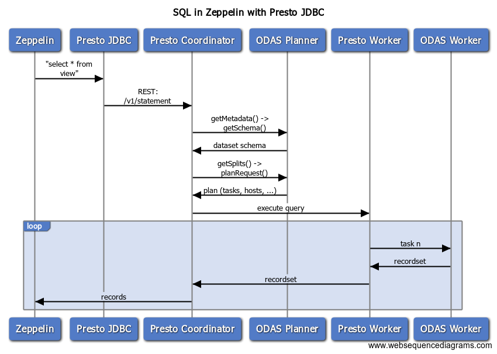

Okera Platform Architecture Overview
The Catalog Overview and ODAS Overview documents introduce the two major components of the Okera Active Data Access Platform (ADAP, or Okera Platform for short). This document takes the next step, explaining the Platform’s architecture and showing the components in action for various client requests.
Architecture
On a more technical level, the Okera Platform is divided into services that are accessible for clients, and a few other services that are only accessible internally by administrators or other services. This is intentionally the case to reduce complexity and concentrate access for clients to just a few locations. The following diagram shows all of the platform services in context.
First we will introduce how clients access the Okera Platform, and then break up the services shown in the diagram based on their scope.
Client Access
The diagram starts in the top right corner with clients of varying kind communicating with the platform. There are three major access points:
-
The Okera Portal Web UI
Clients can use Okera Portal to interact with the underlying platform. The web UI provides access to the catalog services, such as the Schema Registry and the Policy Engine, and enables self-service dataset discovery. It also offers a workspace to issue SQL statements against the platform. Behind the scenes, this web application uses the REST API gateway service to interact with your platform’s services, just the way your bespoke or customized applications can.
-
The REST gateway service
Many clients have support for the ubiquitous REST protocol, avoiding most of the issues that arise when dealing with custom protocols. The REST gateway service gives access to the all necessary client API calls. This includes both the Schema Registry for creating, altering, or dropping various objects, as well as the Policy Engine for granting or revoking access related to all registered objects. See the Catalog API documentation for the list of supported REST calls.
-
The provided client libraries
Finally, Okera provides a set of libraries for interfacing directly with the Catalog and ODAS services, including Planners and the Workers. This is the recommended way to integrate with the Catalog and ODAS services.
The Platform architecture diagram has a dashed line that separates the external services, which provide the client connectivity, from the internal support and management services. The following discusses the external and internal components separately, and how they work together to provide the services to all clients alike.
Client Accessible Components
The external components in the architecture provide the major functionality of the platform, which is the data access and metadata management, as needed by clients such as interactive users to automated applications.
Note how the above referred to services, such as the REST API, Planner, and Catalog services. For failover purposes and continuous availability of these services, it is common in practice to have each service running multiple times. This is explained in greater detail in the Cluster Administration documentation. In short, you can use the provided administrative functionality to instruct the platform to add redundant instances of the services (expressed as multiple, stacked boxes in the diagram) so that in case of a node failure the system will continue to operate.
The Planner service is also responsible for exposing the Catalog services: the Schema Registry and Policy Engine. In effect, the clients use the REST API or client libraries as proxies (as shown in the diagram) to these two Catalog services, provided by the Planner instances. The clients also communicate with the Planner as part of a query execution (see Communication below). For a general overview of all available services and how they can be combined, please refer to the Cluster Types documentation.
The ODAS client libraries are used by many of the provided higher-level client integrations, including Hive, Presto, Spark, and others. This integration support is needed to hide Okera as much as possible behind common tools, with which users are already familiar. For example, enabling the Hive integration allows for existing Hive setups to switch from direct usage of underlying data sources to use ODAS instead. There is no need to alter any metadata at all.
For Python, there are two different ways of communicating with an ODAS cluster: which is using the (legacy) REST API or the (newer) native PyCerebro library.
Tip: Wherever possible, use PyCerebro, as it performs markedly better than REST.
Internal and Management Components
Note that these are intentionally referred to as internal services, as Okera may change these over time, as needed. Their purpose is to support the external services and enable administrators to manage the ODAS clusters.
For the latter, there is the option to maintain ODAS clusters using the Deployment Manager (DM), which is installed as the first component in the Okera Platform setup. See the Cluster Administration document for more details on how to manage ODAS clusters with the DM.
The DM uses Kubernetes (K8s) to manage the cluster services, including the redundant instance for fail-safety. Each service is packaged into its own image and started as a separate container in Kubernetes pods.
The DM does the following when creating new ODAS clusters (simplified):
-
Launch script execution
This step provisions the compute resources; for example, the AWS EC2 instances as configured by the administrator. It also sets instance-specific user data (an EC2 concept) to trigger the next step as part of the instance creation.
-
ODAS Agent installation
The custom user data provided by the DM contains a shell script that installs the necessary base packages and binaries from a shared staging location (for example, S3, avoiding the need to connect to the Internet), including the DMs own Agent service. This happens on each of the provisioned instances, while the DM is waiting for all Agents to report for duty.
After the Agents have started on each node, these next steps happen (again, simplified):
-
ODAS package installation
Each Agent installs all required ODAS packages on its host.
-
Kubernetes Master startup
This starts the Kubernetes control plane services on the first provisioned EC2 instance.
-
Kubernetes Workers startup
The ODAS Agents on all other EC2 instances wait for the K8s master to be available, and then start all necessary K8s worker machine components.
-
Containers startup
Finally, the Kubernetes takes over and starts the managed ODAS services by deploying the ODAS images as containers into pods.
Using the DM command-line tool or API allows an administrator to modify an ODAS cluster setup, which in turn may instruct Kubernetes to run more or fewer containers.
Communication
Once the cluster is operational, a client can communicate with the cluster services. Refer to the Authentication documentation for more details on how to secure the interactions between clients and an ODAS cluster.
Read Request
The following sequence diagram shows how Presto, as an example interacts with ODAS after Okera integration is enabled (see Hadoop ecosystem tools integration).

Depicted is a read request issued by Zeppelin (an interactive notebook service), showing the various calls made between the client and the services. Once a query is submitted in Zeppelin, it will use the Presto JDBC driver to plan and execute the request. The ODAS Planner is used to retrieve the dataset schema and instruct Presto how to distribute the query across its workers. Each worker is handed a list of tasks to perform, which is querying a subset of the resulting records.